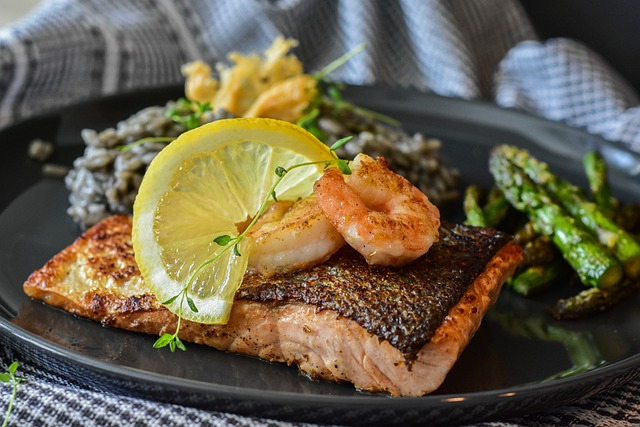
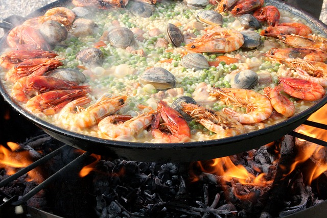

The Culinary Notebook
Home
About Us
Recipes
Gallery
Our Recipes
Find the perfect recipe for every occasion and meal.
Breakfast - French Toast
2 large eggs
1/2 cup milk
1 tsp vanilla extract
1/2 tsp ground cinnamon
1/4 tsp salt
4 slices of bread
Butter or oil for cooking
Maple syrup, powdered sugar, or your favorite toppings

Lunch - Cajun Salmon
4 salmon fillets
1 tablespoon olive oil
1 tablespoon lemon juice
1 tablespoon garlic powder
1 tablespoon paprika
1 teaspoon ground cumin
1 teaspoon dried oregano
1 teaspoon onion powder
1/2 teaspoon cayenne pepper
1/2 teaspoon salt
1/4 teaspoon black pepper
Lemon wedges
Fresh parsley

Dinner - Paella
1 lb chicken thighs
1/2 lb chorizo
1/2 lb mussels
1/2 lb shrimp
1 red bell pepper
1 green bell pepper
1 large onion
3 garlic cloves
1 cup diced tomatoes
1 cup frozen peas
2 cups paella rice
4 cups chicken broth
1/2 cup dry white wine
1/2 tsp saffron threads
1 tsp smoked paprika
Salt and pepper
Dessert - Strawberry Victoria Sponge Cake
1 cup (225g) unsalted butter, softened
1 cup (225g) caster sugar
4 large eggs
2 cups (225g) self-raising flour
1/4 cup (50g) milk
1 tsp vanilla extract
Pinch of salt
1 cup double cream
2 tbsp icing sugar
1 tsp vanilla extract
1 1/2 cups fresh strawberries
Icing sugar